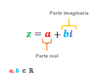
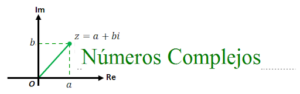

Tabla de contenidos
1. Introducción
Para comenzar esta unidad, les proponemos que primero piensen y resuelvan el siguiente problema:
Consideren la transformación lineal \( T:\mathbb{R}^2\to\mathbb{R}^2; T\begin{pmatrix} x \\ y \end{pmatrix}=\begin{pmatrix} 0 & -1\\ 1 & 0 \end{pmatrix}\cdot\begin{pmatrix} x \\ y \end{pmatrix} \).
En caso de ser posible, busquen los autovectores y autovalores de \( T \). Den argumentos geométricos y algebraicos.
Recuerden que si tienen alguna duda pueden plantearla en el foro Consultas.
Ahora, el profesor Gastón nos propone una resolución del problema anterior en el siguiente video. Primero hace una mirada gráfica y luego una resolución analítica. Finalmente, dará introducción al tema central de esta unidad.
2. Forma binómica de un número complejo
En el video de la introducción surgió la necesidad de inventar un número que elevado al cuadrado da \( -1 \).
A partir de esto, es que trabajamos con un nuevo conjunto numérico que en algún sentido incluirá al conjunto numérico anterior (\( \mathbb{R} \)) y que sea una extensión de éste.
En el siguiente video, el profesor Marcelo define la forma binómica de un complejo y las operaciones suma, resta y multiplicación entre ellos.
En el siguiente video, el profesor Marcelo define el inverso de un complejo y la división entre números complejos.

3. Representación gráfica. Argumento principal y módulo
Ahora vamos a pensar en una forma gráfica de representar a los números complejos. Para representar gráficamente a los números reales usamos una recta, y asociamos a cada punto de la recta un número real. ¿Cómo será el caso de los complejos? ¿Alcanza una recta?
En el siguiente video, el profesor Martín T. nos explica cómo representamos gráficamente un número complejo. Además, nos presenta una forma de caracterizarlos: el módulo y el argumento principal.
4. Forma trigonométrica

En el video de la sección anterior hablamos de Argumento principal y módulo de un complejo. Vimos cuál relación tienen estas características con la representación gráfica. ¿Qué relación hay entre el argumento principal y el módulo de un número complejo y la forma binómica?.
En los siguientes dos videos, el profesor Martín Ch. explora esta cuestión. En el primero se presenta la forma trigonométrica de un complejo, y en el segundo, se muestra un ejemplo de pasaje de una forma de representación a la otra.
5. Propiedad de la multiplicación de los números complejos
En el siguiente video, el profesor Daniel nos muestra una forma gráfica de visualizar la multiplicación de los números complejos. Luego, justificamos una propiedad de la multiplicación.

6. Actividades y texto teórico
Les proponemos que realicen los siguientes ejercicios y problemas.
- Listado de ejercicios y problemas para trabajar con números complejosPDF con los Ejercicios citados de la Guía de Problemas
Además, compartimos con ustedes un texto con explicaciones sobre números complejos.
7. Autoevaluación
Durante la segunda de estas dos semanas tendrán habilitada la Autoevaluación sobre números complejos, que forma parte de la evaluación continua.
8. Parciales 2
En esta carpeta incluimos parciales viejos. Los parciales 2 hasta 2019 además de esos temas, incluían sistemas, matrices y determinantes. A partir del 2022 tomamos todos esos temas en el primer parcial.
Más Parciales y Finales en Proyecto Campus